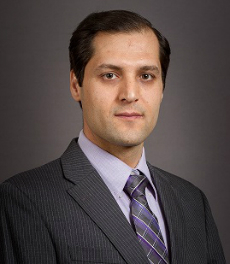

Abolfazl Razi
Assisstant Professor
Graduate Coordinator
Electrical Engineering and Computer Science
Northern Arizona University
Email: abolfazl.razi@nau.edu
Phone:(928) 523-5095
Room 253, bldg 69
2112 S Huffer Lane
Flagstaff, AZ 86011
Dr. Razi is an Assistant Professor of Electrical Engineering in the School of Informatics, Computing and Cyber Security (SICCS) at Northern Arizona University. His current research is remote sensing and predictive modeling with focus on health related applications. In particular, he is interested in developing signal processing methods and deep-learning algorithms to incorporate sophisticated biological process into quantifiable computational framework. The results of this research can be used for technology development for iHealth and remote monitoring of health-related vital signals as well as therapeutic intervention through predictive modeling. He is looking for developing integrative computational frameworks to integrate conceptual information in molecular biology (e.g. signaling pathways, protein-protein interaction networks) with the measurement-based multi-modal data (e.g. Multi-Omics data, imaging results and so on) with special focus on cancer subtyping and response to targeted therapy.
You can find him at: www.cefns.nau.edu/~ar2843